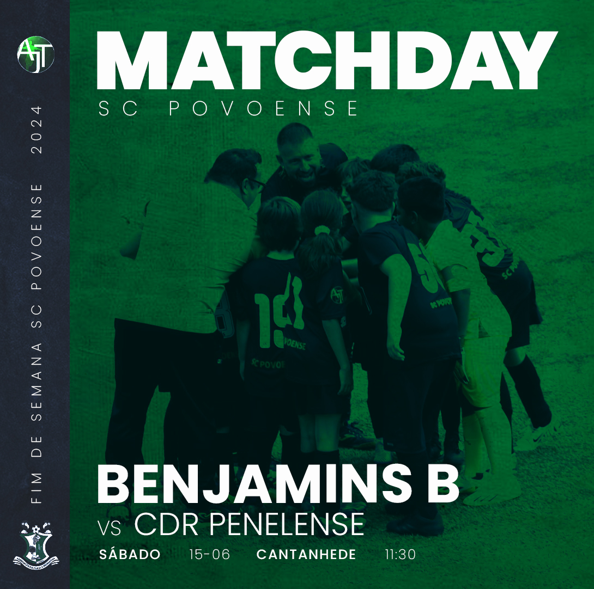
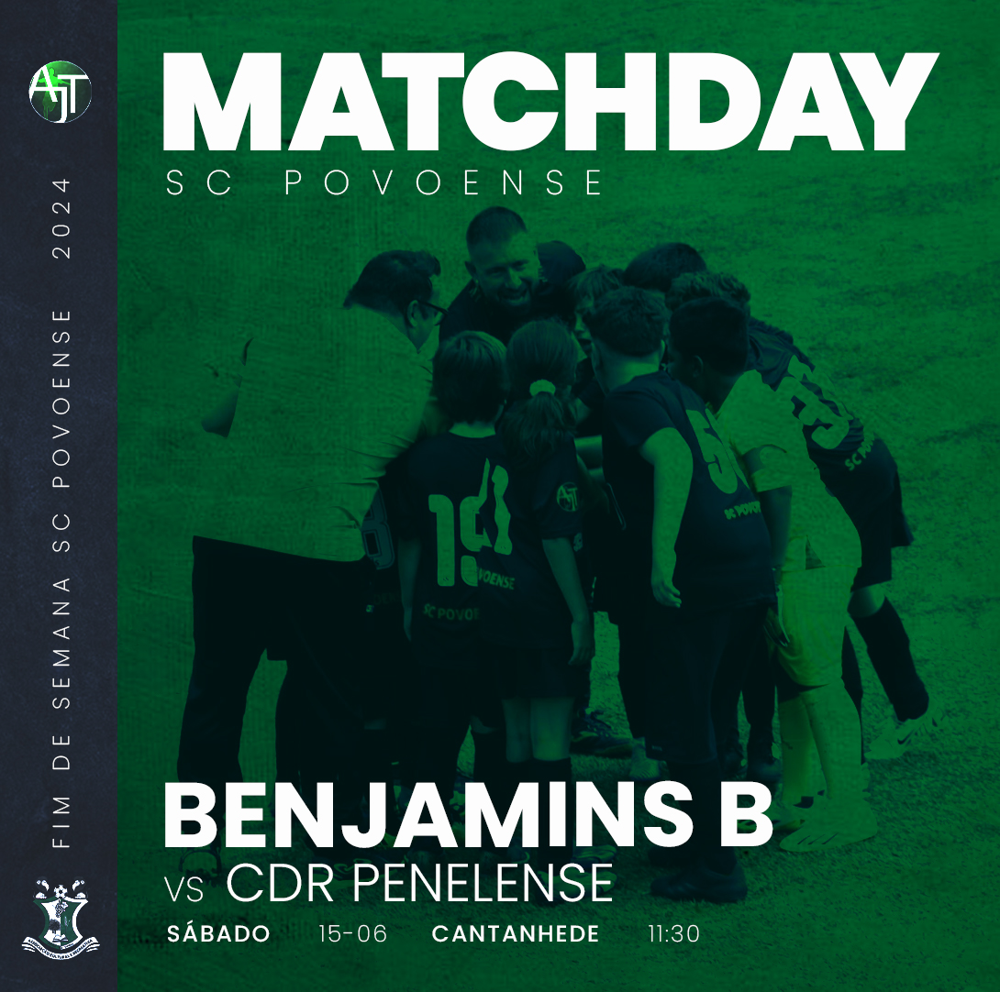
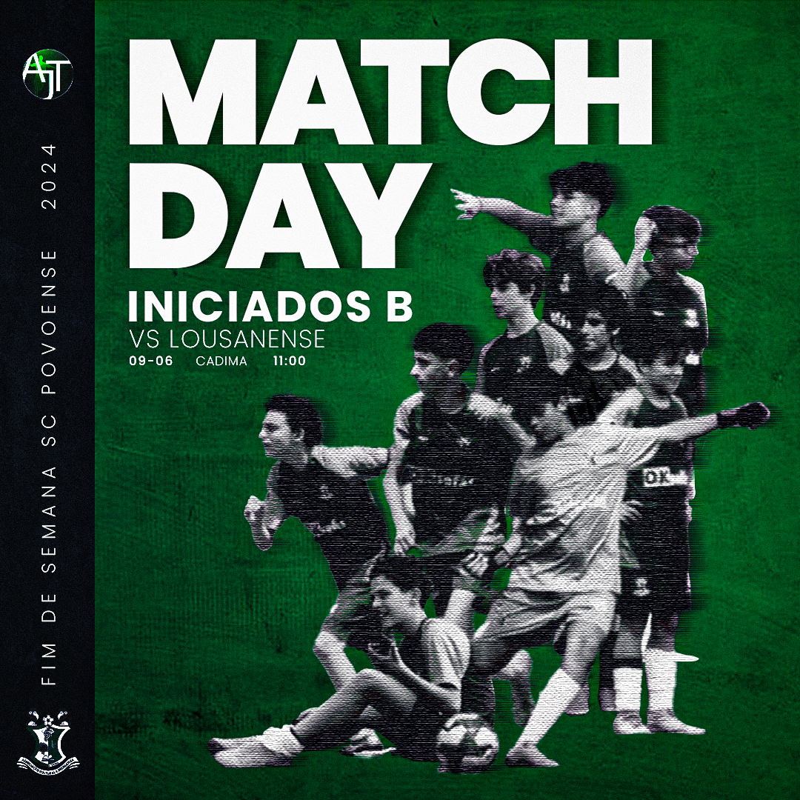
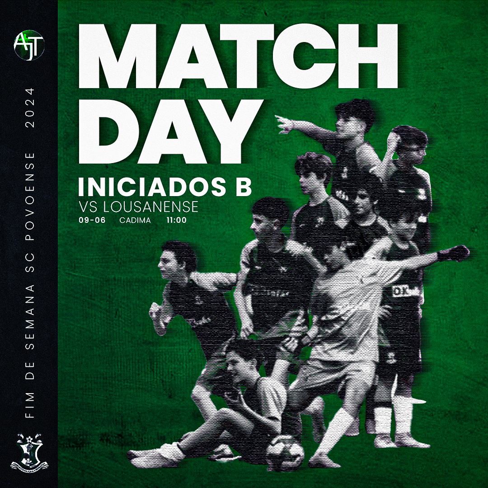

AJT SC Povoense Matchdays and Social Media Posts
The "Aprende e Joga com Talento" soccer school at Sporting Clube Povoense, is a project founded on October 5, 2010, located in the municipality of Cantanhede, my hometown, in the town of Póvoa da Lomba. The work done for the club was carried out during the period I was involved with the club as a player and coach.
I was a soccer player for SC Povoense, a club that was part of my training and that of my younger brothers, not only as players, but also as people. I started experimenting with video editing and had the opportunity to produce design work where I could try new things. I also had the opportunity to gain some experience as a coach of teams at various training levels. These designs were created with the aim of improving the club's social communication by helping to promote the sports weekends of the different youth soccer teams that make up the club. In between, I also made some posts and edited promotional videos for recruitment training sessions.
 

 
